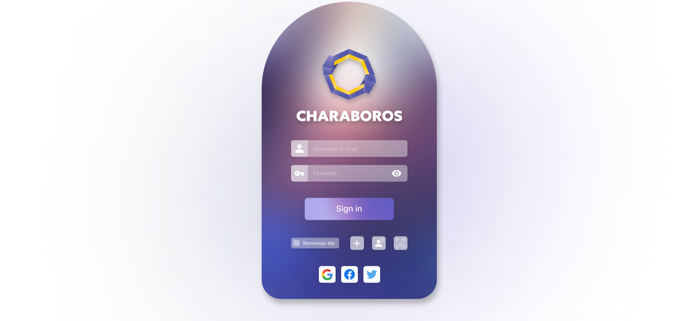

GAME LAUNCHER UI/UX PROJECT

INTRO
This project is my passion project as a gamer. This game launcher that is thoughtfully organized and includes essential tools that I believe are necessary for a seamless gaming experience.


Problem
I have combined my personal experience of several years of gaming, the opinions of my gamer friends, and research to identify the problems with existing game launchers.

Benchmark
During the benchmark section, I analyzed other game launchers to identify their strengths and weaknesses and find opportunities for improving my own launcher. Through this analysis, I gained insights into the essential design features that will make my launcher effective and user-friendly.

User Persona

Identity
So, why Charaboros?
Ouroboros symbolizes infinity and eternity.
In this symbol, the snake is swallowing its own tail.
Ouroboros is an ancient Greek word.
In the game launcher, users will chase endless joy.

Sketches
During this process, I roughly visualized my ideas.

Wireframes
In the wireframes section, I utilized my understanding of the user's needs and preferences to create a clear and intuitive interface for the game launcher, allowing for easy navigation and efficient management of the user's game library.


Login
Your experience of Charaboros starts with login page. You can either create a Charaboros account or log in with other accounts such as Google or Facebook.
Game Searching
All the games you are looking for are here. Explore recommendations for you and download to your library.

Library
Your game collection will always be listed on the left side of your launcher, allowing you to easily select and manage your games at any time.

Game Time Manager
Charaboros helps manage your gaming time.
Check which games you spend the most time on.

Schedule Manager
It looks like you have plans with friends next Friday to play World of Warcraft!
Add the schedule to your calendar.

Chat
Charaboros provides a chat service for a better game experience.
It seems your friends want to play on Friday. Put that schedule directly on the calendar by simply clicking the time.

Voice Chat
Of course, Charaboros also supports voice chat.
Enjoy playing games while communicating with your friends.

Voice Assistant
Don't click Alt + Tab while using this game launcher. Your voice assistant can help you with any task. Try calling "Zac" and adding an appointment for Wednesday at 3 o'clock.